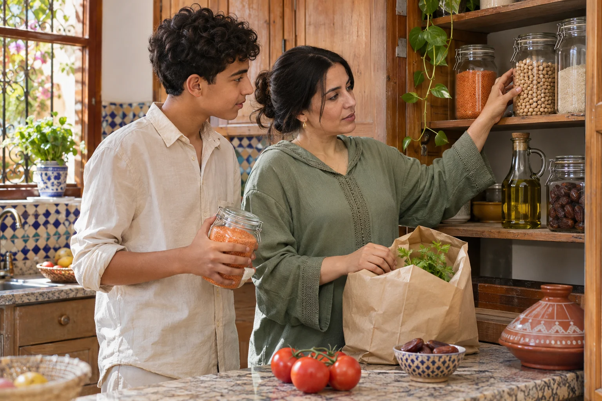

كيف تعرف ما يوجد في مؤونة المنزل؟
راجع مخزون البيت وكميات المنتجات وأماكن التخزين وتواريخ الصلاحية قبل التسوّق.

ابحث باسم المنتج أو مكانه
قبل التسوّق، افتح الجرد وابحث عن الأرز مثلًا، أو اختر الثلاجة لرؤية ما فيها. افتح بطاقة المنتج للعثور على الملاحظات والتفاصيل المسجّلة.
راجع التواريخ والكميات
رتّب المنتجات بحسب تواريخها لمراجعة ما ينبغي استخدامه أولًا. إذا تغيّرت الكمية أو نُقل المنتج إلى مكان آخر، حدّث سجله. اتبع دائمًا تعليمات الحفظ على العبوة.
ما الذي يظهر في الجرد؟
ترى الاسم والصورة إن توفّرت والمكان والفئة والكمية والتاريخ. تظهر عبوة حليب نصف ممتلئة كعبوة واحدة بنسبة 50%. وقد يظهر الصنف نفسه في سطرين إذا وُضع في مكانين. لتحديث الكميات أو نقل الأصناف استخدم شاشة الاستهلاك. ولإضافة المشتريات استخدم شاشة التسجيل.
اجمع عوامل التصفية
يمكنك البحث بجزء من الاسم والجمع بين مكان وفئة، مثل الثلاجة والمشروبات. عند الحاجة اختر الفئة الفرعية المتاحة. لرؤية جميع الأصناف امسح البحث وأعد الخيارات إلى «الكل».
التواريخ وتفاصيل العبوة
تظهر التواريخ الأقرب أولاً، باللون الأصفر للتقديرية وبالأحمر للملزمة عند عرض التنبيه. تعرض بطاقة الصنف الملاحظات والباركود، وقد تعرض العلامة التجارية والمكوّنات والطاقة ومسببات الحساسية ومصدر البيانات. قد تكون بعض المعلومات ناقصة أو بلغة المصدر. خلو الحقل لا يعني خلو الصنف من مسببات الحساسية، لذا تحقّق من الملصق.